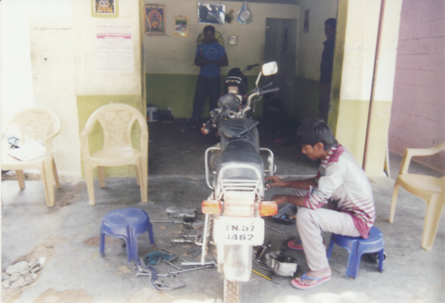
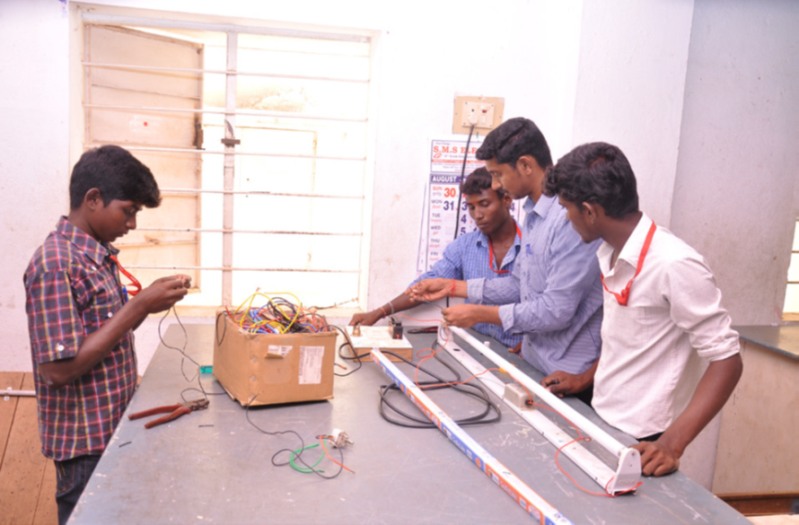
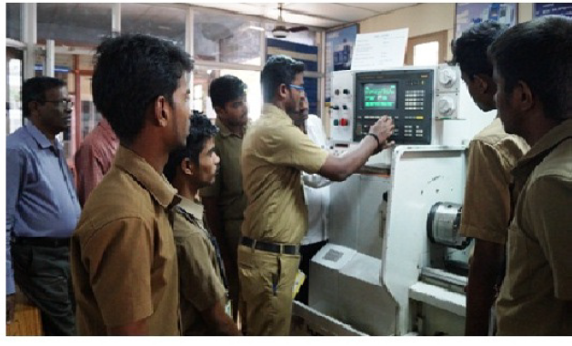
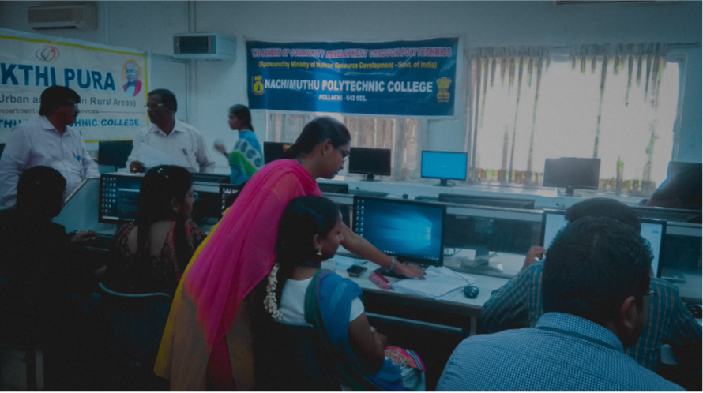
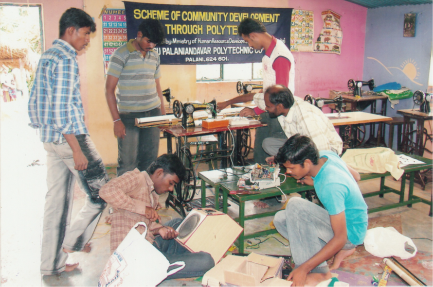
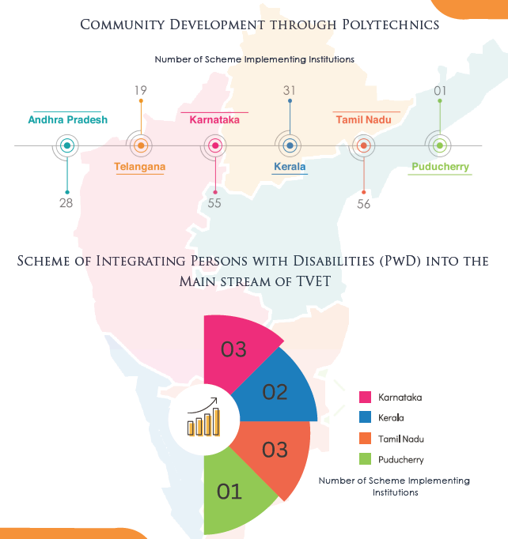

In order that the human resource is developed for gainful
employment/self employment, the training must be need
based, and should provide employable/self-employable
skills. The purpose of the skill development is to create
skilled and knowledge based manpower by empowering
them technically so that they can earn their sustainable
livelihood. The training programs both technical and non
technical are well-designed through graded exercises,
keeping in view the market requirements for various
trades.
Short term non-formal, modular
courses of 3-6 months duration,
depending on the local needs and
commensurate with the available local
resources with proper structures, yet
having the desired flexibility to pave the
way for self paced open learning mode
(OLM), are being offered. Depending
upon local circumstances in some
cases Multi-skill training are offered to
make self employment viable in the
rural economy.
In some of the trades, advance skill
course for 3 to 6 months duration were
designed and offered as per the interest
of trainees or as per the demands of
local companies/ industries/ market.
A large number of technologies have been developed by various research institutions and laboratories
in the form of appropriate technologies. But, the benefits of these technologies have failed to reach the
rural population. The villagers could not adopt these modern technologies and implements to improve
productivity, and, in turn, their quality of life, since the process of transfer of technologies was not
undertaken in a planned manner.
NITTTRs compiled the list of appropriate technologies developed by DST, CSIR, ICAR, IITs, NITs,
Technical Universities and other prominent Research Institutions of the country and identify location
specific technologies and organise training programs for the staff of project implementation institutions
on these technologies.

